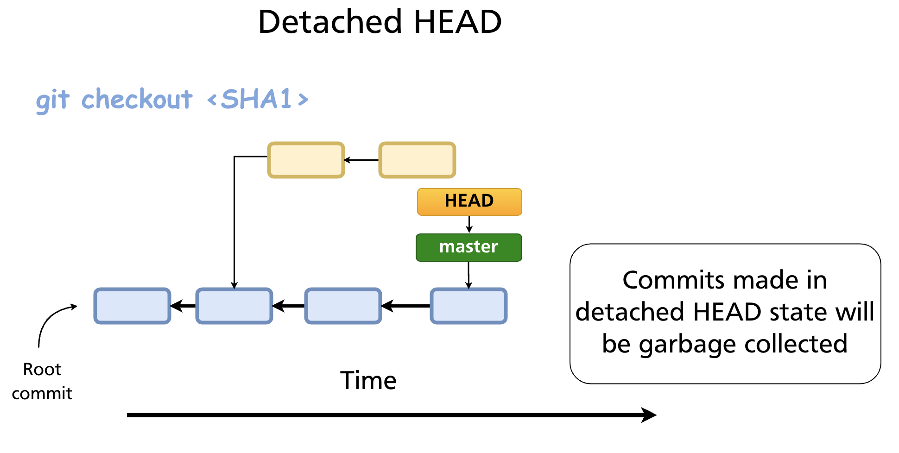

Chapter 16 — Detached HEAD
In normal operation, HEAD points to a branch name, and that branch points to a commit. When you commit, the branch advances and HEAD follows along automatically. Detached HEAD is what happens when HEAD points directly to a commit SHA rather than to a branch. It is a valid and useful state — but it comes with a trap you need to understand before you use it.
Normal HEAD vs Detached HEAD
Normally the chain is:
In detached HEAD state:

Git signals this immediately when you enter the state:
Note: switching to 'a3f8c21'.
You are in 'detached HEAD' state. You can look around, make experimental
changes and commit them, and you can discard any commits you make in this
state without impacting any branches by switching back to a branch.
If you want to create a new branch to retain commits you create, you may
do so (now or later) by using -c with the switch command. Example:
git switch -c <new-branch-name>
Or undo this operation with:
git switch -
How to Enter Detached HEAD
Check out a specific commit
Check out a tag
This is the most common real-world use: inspecting what the codebase looked like at a specific release.
During a rebase
Git temporarily enters detached HEAD while replaying each commit during git rebase. This is handled internally and resolves automatically when the rebase completes (or is aborted).
What You Can Do in Detached HEAD
You can do anything you normally do: read files, run code, create new commits. The working tree and staging area behave identically.
# Look at the state of a file at this commit
cat src/auth.js
# Run the project
npm test
# Make an experimental change and commit it
git add src/experiment.js
git commit -m "Experimental change"
The danger is that commits you make in detached HEAD state are not tracked by any branch. They are reachable only through HEAD itself (and through the reflog, temporarily). As soon as you switch to a branch, HEAD moves away from those commits — and without a branch pointing to them, Git's garbage collector will eventually discard them.
The Trap: Losing Commits
Suppose you are in detached HEAD at a3f8c21 and you make two commits — b1c2d3e and f4e5d6c. Then you run:
HEAD now points to main. Your two commits (b1c2d3e, f4e5d6c) are no longer reachable from any branch or tag. Git will warn you:
Warning: 1 commit(s) left to be garbage collected; use --force with prune if you want to remove them now.
If you do nothing, those commits will be garbage collected after the default grace period (typically 30 days for unreachable objects, though the gc.pruneExpire config controls this).
Saving Work from Detached HEAD
Before switching away — create a branch immediately
This is the clean path. While HEAD is still on the commit you want to keep:
This creates a new branch pointing to the current detached HEAD commit. HEAD now points to the new branch — you are no longer in detached state, and your commits are safe.
After switching away — recover via reflog
If you have already switched away, git reflog still has the SHA:
git reflog
# HEAD@{0}: checkout: moving from f4e5d6c to main
# HEAD@{1}: commit: Experimental change
# HEAD@{2}: commit: First experiment
# HEAD@{3}: checkout: moving from main to a3f8c21
Find the SHA of the last commit you made in detached HEAD (f4e5d6c in this example), then create a branch pointing to it:
Or check it out directly and create the branch:
Reflog entries are retained for 90 days by default (gc.reflogExpire), so recovery is generally possible as long as you act before the next garbage collection.
Legitimate Uses of Detached HEAD
Detached HEAD is not just an accident to avoid — it has genuine, common uses:
| Use case | How |
|---|---|
| Inspect code at an old commit | git checkout <sha> — browse, run, read without affecting any branch |
| Inspect code at a release | git checkout v2.1.0 — see exactly what shipped |
| Bisect | git bisect manages detached HEAD internally while walking the commit range |
| Rebase internals | Git uses detached HEAD to replay each commit; handled automatically |
| Test a hotfix starting from a tag | git checkout v1.0.0, test, then git switch -c hotfix/1.0.1 if needed |
For any of these, the rule is the same: if you commit anything you want to keep, create a branch before moving away.
git switch - — Return to the Previous Branch
A quick way to leave detached HEAD and return to wherever you were before:
This is the equivalent of cd - in the shell — it switches to the previously checked-out branch. If you made no commits in detached HEAD, there is nothing to lose.
Checking Whether You Are in Detached HEAD
git status
# HEAD detached at a3f8c21
# nothing to commit, working tree clean
git branch
# * (HEAD detached at a3f8c21)
# main
# feature-x
The * in git branch output shows (HEAD detached at <sha>) rather than a branch name.
Summary
- Detached HEAD means HEAD points directly to a commit SHA rather than to a branch.
- It is entered via
git checkout <sha>,git checkout <tag>, orgit switch --detach <sha>. - You can make commits in detached HEAD, but they are not tracked by any branch and will be garbage-collected after you move away.
- To save work: create a branch with
git switch -c <name>before switching away. - To recover lost commits: use
git reflogto find the SHA, thengit branch <name> <sha>. - Legitimate uses include inspecting old code, checking out release tags, and serving as the internal mechanism for
git rebaseandgit bisect.
Previous: Chapter 15 — Tags & Semantic Versioning · Next: Chapter 17 — GitHub Overview & Remote Repositories